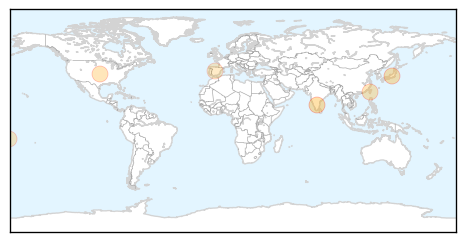
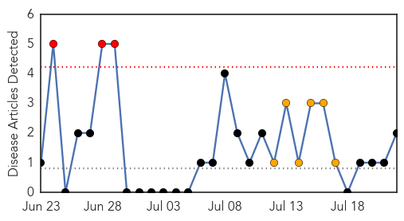
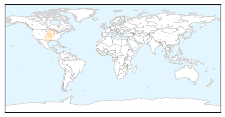

Dengue Fever
30-Day Web Trend
0 alerts, 9 warnings

30-Day Twitter Trend
2 alerts, 0 warnings

Article Locations
Article Confidences

Top Articles:
- 0.999
- No Respite From Dengue, Chikungunya
- 0.990
- Communicable diseases on the rise in Kochi
- 0.916
- 22.07.09 Dengue detected among IDPs in Vavuniyaa
- 0.822
- Taiwan reports 38 ‘locally acquired’ dengue cases in past week, health officials mobilize to support elimination of mosquito breeding sites
- 0.810
- American Samoans told to throw out stagnant water to curb dengue
- 0.699
- Study spots where dengue mosquitoes breed on island
- 0.647
- Italy warns tourists to refrain from fountain splashing
Top Tweets:
-
No tweets found for Jul 22, 2015
Pertussis
30-Day Web Trend
3 alerts, 6 warnings

30-Day Twitter Trend
0 alerts, 0 warnings

Article Locations
Article Confidences

Top Articles:
Top Tweets:
-
No tweets found for Jul 22, 2015